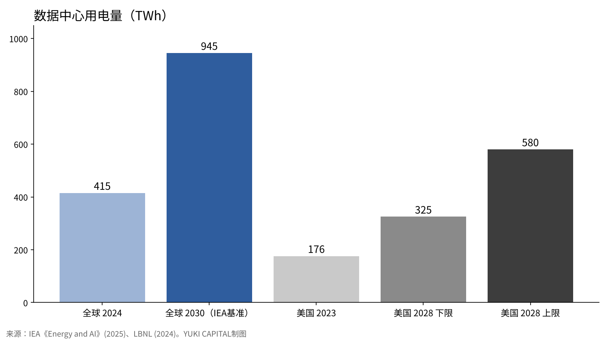
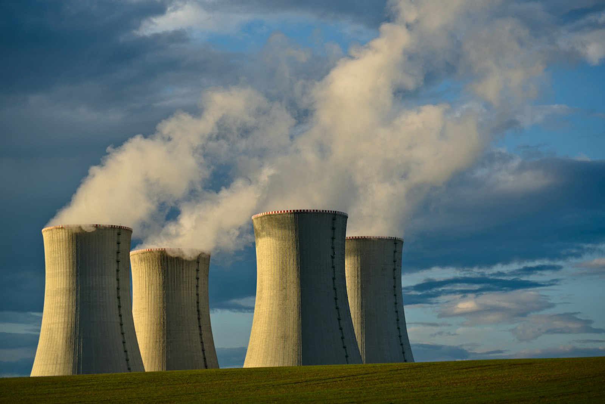
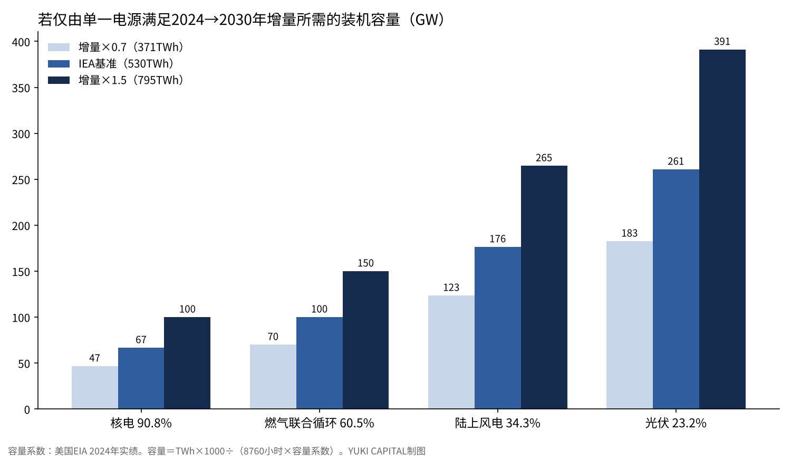

到2030年AI用电会增加多少，靠哪种电源来满足——用数字并列可再生能源、核电、火电与核聚变
国际能源署（IEA）估计，2024年全球数据中心用电约415TWh，约占全球用电量的1.5%[1]。
在同一估算的基准情景中，到2030年这一数字将增至约945TWh，增长一倍多。增量约为530TWh，AI的普及被视为主要原因[1]。
本文只提一个问题：这约530TWh的增量，可再生能源、核电、火电和核聚变各自需要多大的装机、在什么时间之前能够满足？本文不下结论，只并列数字。

问题与背景
首先定义本文使用的三个词。TWh（太瓦时）是电量单位，相当于10亿kWh。容量系数，是指一年内实际发电量除以按最大出力全年运行时的发电量所得的比率。LCOE（平准化度电成本），是指把电站从建设、运营、燃料到退役的费用，除以其全寿命发电量后得到的每MWh成本[5]。
2024年的约415TWh只占全球用电量的约1.5%。按地区看，美国占45%，中国占25%，欧洲占15%[1]。
美国能源部发布的劳伦斯伯克利国家实验室（LBNL）报告显示，美国数据中心用电量从2014年的58TWh增至2023年的176TWh，占全国的4.4%。报告估计，到2028年将达到325至580TWh，占全国的6.7%至12%[2]。
在日本，2025年2月18日内阁会议通过的《第7次能源基本计划》预计，2040财年所需发电量最多约1.2万亿kWh，约为2023财年的1.2倍。理由是数据中心和半导体工厂的新建与扩建[3]。同一计划把2040财年的电源结构定为可再生能源约40%至50%、核电约20%、火电约30%至40%。2023财年的实际比例为可再生能源22.9%、核电8.5%、火电68.6%[3]。
数据与方法
需求方面，只使用两个来源：IEA《Energy and AI》的基准情景（2024年与2030年），以及LBNL对美国的估算（2023年与2028年）[1][2]。供给方面，用四把尺子并列比较：美国能源信息署（EIA）公布的2024年容量系数[4]、Lazard于2025年6月公布的无补贴LCOE[5]、IPCC第五次评估报告汇总的全生命周期温室气体排放中位数[6]，以及Ember统计的2025年全球发电量[7]。
核电的建设进度，以世界核协会2026年10月23日的清单[8]和IEA《Global Energy Review 2026》[9]确认；核聚变则依据劳伦斯利弗莫尔国家实验室（LLNL）[10]、ITER组织[11]和核聚变产业协会（FIA）[12]的公开资料。
计算只有一个：假如2024至2030年的增量只由一种电源满足，需要多少GW的装机？公式为“装机容量（GW）＝电量（TWh）×1000÷（8760小时×容量系数）”。实际电力系统是多种电源组合使用的，因此这个数值是用来比较各电源规模的参考。
结果：需求会增加多少
| 对象 | 年份 | 用电量 | 占国家或全球的比例 | 来源 |
|---|---|---|---|---|
| 全球数据中心 | 2024年 | 约415TWh | 约1.5% | IEA[1] |
| 全球数据中心 | 2030年（基准情景） | 约945TWh | — | IEA[1] |
| 美国数据中心 | 2023年 | 176TWh | 4.4% | LBNL[2] |
| 美国数据中心 | 2028年（估算） | 325至580TWh | 6.7%至12% | LBNL[2] |
| 日本发电量（整体） | 2040财年（展望） | 最多约1.2万亿kWh | 约为2023财年的1.2倍 | 第7次能源基本计划[3] |

2024至2030年的6年间，全球增量约为530TWh。仅美国一国，2023至2028年的5年间就将增加149至404TWh。

结果：把四类电源并列比较
| 电源 | 容量系数（美国2024年） | 无补贴LCOE（美元/MWh） | 全生命周期排放（gCO2/kWh·中位数） | 规模数字 |
|---|---|---|---|---|
| 光伏（大型） | 23.2% | 38至78 | 48 | 2025年全球发电2,778TWh，一年增加636TWh |
| 陆上风电 | 34.3% | 37至86 | 11 | 2025年全球增加205TWh |
| 核电 | 90.8% | 141至220 | 12 | 在建79台、86.6GW（其中中国38台） |
| 燃气（联合循环） | 60.5% | 48至109 | 490 | 2025年占全球发电21.8%，增加36TWh |
| 煤电 | 42.6% | 71至173 | 820 | 2025年占全球发电33.0%（10,476TWh），减少63TWh |
来源：容量系数为EIA[4]，LCOE为Lazard[5]，排放为IPCC[6]，规模为Ember[7]和世界核协会[8]。
仅2025年一年，光伏和风电合计增加了841TWh。可再生能源整体达到10,730TWh，占全球发电的33.8%，首次超过煤电的33.0%[7]。仅看发电量的增长，其一年的增量就超过了需求6年的增量530TWh。
另一方面，数据中心昼夜不停地用电。光伏的容量系数为23.2%，其余时间需要用储能或其他电源来填补。在同一份Lazard报告中，4小时储能的平准化成本为每MWh 145至319美元[5]。
如果在建的79台、86.6GW核电全部投运，并以90.8%的容量系数发电，每年约可发电689TWh，超过到2030年的增量530TWh。不过，在建容量约有一半在中国[9]，各机组的完工时间也不相同。IEA指出，2025年新并网的核电约3GW，同年退役的也约3GW，全球装机为420GW[9]。
燃气和煤电已占全球发电的一半多一点。2025年煤电减少63TWh，燃气增加36TWh[7]。全生命周期排放方面，煤电为每kWh 820克，燃气为490克，是核电12克、风电11克的数十倍[6]。
结果：核聚变目前处在什么位置
核聚变是指让轻原子核相互聚合，并取出其释放的能量的方式。LLNL的国家点火装置（NIF）在2025年4月7日的实验中，以照射到靶上的2.08MJ激光能量，获得了8.6MJ的聚变能量。增益为4.13，超过2024年2月的5.2MJ，创下纪录[10]。这个增益是与到达靶的激光能量之比，而不是与整个设施耗电量之比。
国际合作建设中的ITER在2024年7月提出的新计划中，把研究运行的开始定为2034年，氘氘运行定为2035年，氘氚运行的开始定为2039年[11]。目标是以50MW的加热输出500MW热功率并持续400秒。ITER并不是为发电售电而设计的设施。
民间方面，FIA的2025年报告显示，受访的53家公司累计融资97.66亿美元，最近12个月融资26.4亿美元。关于首次向电网送电的时间，53%回答在2035年之前，84%回答在2030年代末之前[12]。对于到2030年的增量530TWh，在所有公开计划中，核聚变的供电量都是0TWh。
敏感性分析
把需求增量按IEA基准情景的0.7倍（371TWh）、1.0倍（530TWh）、1.5倍（795TWh）三种情况变动，再与四种电源的容量系数相乘，得出12种所需装机容量。

| 增量 | 核电（90.8%） | 燃气联合循环（60.5%） | 陆上风电（34.3%） | 光伏（23.2%） |
|---|---|---|---|---|
| 371TWh（×0.7） | 47GW | 70GW | 123GW | 183GW |
| 530TWh（基准） | 67GW | 100GW | 176GW | 261GW |
| 795TWh（×1.5） | 100GW | 150GW | 265GW | 391GW |
满足同样的电量，光伏所需装机约为核电的3.9倍，陆上风电约为2.6倍，燃气联合循环约为1.5倍。这些倍数由容量系数之比决定，因此即使需求假设变动也不会改变。变动的是绝对值：基准情景下核电的67GW，在需求为1.5倍时变为100GW。在建核电86.6GW超过基准情景的67GW，但达不到1.5倍情景的100GW。
讨论
相反的观点有两种。一种认为效率提高会使需求低于估算。LBNL估算的下限325TWh，只有上限580TWh的56%[2]。另一种认为估算过小。如果直接采用美国的上限，仅美国一国就超过全球6年增量的七成。
本文的数字有其局限。容量系数和LCOE是美国的数值，在日本或中国会有所不同。LCOE不包括电网扩容和弥补出力波动的费用[5]。排放中位数汇总的是2014年以前的研究[6]，没有反映此后的技术改进。单一电源的计算，没有考虑电源组合、数据中心的选址以及等待并网的时间。
检验的标准有四个：IEA下一次估算会把2030年的945TWh往哪个方向调整；美国2028年的实际用电落在325至580TWh的哪个位置；在建核电86.6GW中，到2030年有多少GW投运；以及ITER能否守住2034年开始研究运行的计划。
结论
只把数字并列起来，结果如下。全球数据中心用电从2024年到2030年将增加约530TWh。若由单一电源满足，需要核电67GW、燃气联合循环100GW、陆上风电176GW或光伏261GW。仅2025年一年光伏和风电就增加了841TWh，在建核电投运后每年约可发电689TWh。在公开计划中，核聚变对到2030年的增量贡献为0TWh。
我这样看
我在日本，支持核电。即便如此，在这篇文章里，我没有决定哪种电源更好，只是把数字并列出来。
我持有的SpaceX提出了到2027年底把算力提高到13GW以上的计划[13]。13GW全年运行约为114TWh，相当于全球6年增量的约两成。接下来我要看的是三个数字：IEA的下一次估算、美国2028年的实际用电，以及ITER 2034年的计划。
来源
- IEA《Energy and AI》2025-04-10 https://www.iea.org/reports/energy-and-ai
- 美国能源部／劳伦斯伯克利国家实验室《2024 United States Data Center Energy Usage Report》2024-12-20 https://www.energy.gov/articles/doe-releases-new-report-evaluating-increase-electricity-demand-data-centers
- 日本经济产业省资源能源厅《第7次能源基本计划》2025-02-18 https://www.enecho.meti.go.jp/category/others/basic_plan/
- 美国能源信息署《Electric Power Annual, Table 4.08.A / 4.08.B Capacity Factors》 https://www.eia.gov/electricity/annual/html/epa_04_08_b.html
- Lazard《Levelized Cost of Energy+ (LCOE+) 2025》2025-06-16 https://lazardltd.gcs-web.com/news-releases/news-release-details/lazard-releases-2025-levelized-cost-energy-report
- IPCC《Climate Change 2014: Mitigation of Climate Change, Annex III》2014 https://www.ipcc.ch/site/assets/uploads/2018/02/ipcc_wg3_ar5_annex-iii.pdf
- Ember《Global Electricity Review 2026》2026 https://ember-energy.org/latest-insights/global-electricity-review-2026/2025-in-review/
- 世界核协会《Plans for New Reactors Worldwide》2026-10-23 https://world-nuclear.org/information-library/current-and-future-generation/plans-for-new-reactors-worldwide
- IEA《Global Energy Review 2026: Nuclear》2026 https://www.iea.org/reports/global-energy-review-2026/technology-nuclear
- 劳伦斯利弗莫尔国家实验室《National Ignition Facility – FY2025 Annual Report》 https://annual.llnl.gov/fy-2025/national-ignition-facility-2025
- ITER组织《Baseline press conference summary》2024-07 https://iter.org/sites/default/files/media/2024-07/baseline_press_conference_summary_july-2024_b.pdf
- 核聚变产业协会《The global fusion industry in 2025》2025-07（World Nuclear News摘要） https://wnn.world-nuclear.org/articles/access-to-funding-remains-a-major-issue-for-fusion-says-fia
- Teslarati《Elon Musk calls Earth’s data centers peanuts next to what SpaceX is planning in orbit》2026-11 https://teslarati.com/elon-musk-calls-earths-data-centers-peanuts-next-to-what-spacex-is-planning-in-orbit
照片：Matthew Henry、Lukáš Lehotský（Unsplash）。图表由YUKI CAPITAL制作
每天的数字和判断，我都记录在X上。